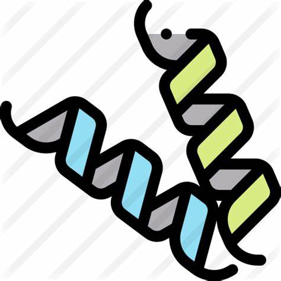

Proteomics
蛋白质组（Proteome）是在生物细胞、组织、器官或完整生物体内所表达的所有蛋白质的集合，蛋白质组学（Proteomics）是蛋白质组的大范围研究，包括结构蛋白质组学、功能蛋白质组学与临床蛋白质组学。
—— 欧洲生物信息学研究所（EBI）
蛋白质组学 Proteomics 

蛋白质组学本质上指的是在大规模水平上研究蛋白质的特征，包括蛋白质的表达水平，翻译后的修饰，蛋白与蛋白相互作用等，由此获得蛋白质水平上的关于疾病发生，细胞代谢等过程的整体而全面的认识。是系统地研究生物学规律和机制的成熟并且有效的工具。蛋白质组的研究不仅能为生命活动规律提供物质基础，也能为众多种疾病机理的阐明及攻克提供理论根据和解决途径。相较于基因组学与转录组学，蛋白质组学直接全面解析样本蛋白质丰度或翻译后修饰水平，发现基因与转录水平无法确定的直接蛋白调控机理，是“后基因组”时代的核心内容，对于深入了解生命现象的本质、疾病发生机理、疾病诊断乃至药物开发有着巨大的意义。
蛋白质组分析 pipeline
目前最常用的两种研究蛋白质组学的高通量手段是基于凝胶的电泳技术，例如双向荧光差异凝胶电泳(Two-dimensional fluorescence difference in gel electrophoresis, 2D-DIGE)和基于质谱仪（mass spectrometry, MS）的分析技术，例如串联质谱法（Tandem-MS）。凝胶电泳利用蛋白的等电点和分子质量的差异，通过等点聚焦和SDS-PAGE分离，通过染色和成像把不同电性和大小的蛋白质显示在凝胶上；点的密度、大小、位置不同可以定性查看有无和相对定量地查看丰度差异。质谱是测量离子质荷比的分析方法，基本原理是使待测样品中的组分在离子源中离子化（常用离子源有：基质辅助激光解吸电离（MALDI）；电喷雾电离（ESI）），经过电场加速形成离子束，进入质量分析器，获得质谱图，通过与Uniprot数据库比较，得到对应的蛋白定量。
蛋白质组学技术路线 首先提取感兴趣的蛋白质样品，胰蛋白酶分解成肽段混合物（蛋白质消化）。 所得肽段通过高效液相色谱分离（流动相为液体，在高压作用下快速流过固定相，分离效能高，灵敏度高，越早洗脱出的越亲水）。随后通过进入质谱仪中，离子化后经过电场加速形成离子束，进入质量分析器，获得质谱图。在质谱仪中记录其质荷比和肽段谱图。 分析MS数据以鉴定和定量检测到的肽段，并将其组装成蛋白质。 蛋白质组分析完成后，相关差异蛋白的功能分析就可以揭示相关代谢途径及蛋白质相互作用等生物学问题。